Top Masteries
 By
AmirGaris
By
AmirGaris
Contents
- Intro
- Current Champions
- Notable Milestones
-
Category Rankings
- Total Awards
- Total Awards (Excluding Hacks)
- Event Awards
- Site Awards
- Hack Awards
- Homebrew Awards
- Subset Awards
- Amstrad CPC
- Apple II
- Arcade
- Arcadia 2001
- Arduboy
- Atari 2600
- Atari Jaguar CD
- Dreamcast
- Elektor TV Games Computer
- Fairchild Channel F
- Game Boy
- Game Boy Advance
- Game Boy Color
- Game Gear
- GameCube
- Interton VC 4000
- Master System
- Mega Drive
- Mega Duck
- Nintendo 64
- NES
- Nintendo DS
- Nintendo DSi
- PC Engine
- PC Engine CD
- PC-8000/8800
- PlayStation
- PlayStation 2
- PlayStation Portable
- Pokémon Mini
- Sega Saturn
- Sega CD
- SG-1000
- SNES
- Uzebox
- Virtual Boy
- WASM-4
- Watara Supervision
Intro
We are going to take a look at another metric for greatness, Mastery Awards. Mastery awards are given to users when they complete every achievement for a given set in hardcore mode. Users wear mastery awards as a badge of honor on their profile page representing all the hard work they put into truly becoming a master of the game.
Below we will take a look at which users rank among the best with the most mastery awards in several categories well as notable updates from the previous month to each individual category. Check to see how you rank among the rest of the community members.
Special thanks to  Nydaxn for creating the ranking image templates.
Nydaxn for creating the ranking image templates.
* Data as of July 1st 2025.
Current Champions
 Total Awards
Total Awards 3DO Interactive Multiplayer
3DO Interactive Multiplayer HotCoffee
HotCoffee Amstrad CPC
Amstrad CPC Apple II
Apple II Arcade
Arcade Arcadia 2001
Arcadia 2001 Arduboy
Arduboy Atari 2600
Atari 2600 Atari 7800
Atari 7800 Atari Jaguar
Atari Jaguar Atari Jaguar CD
Atari Jaguar CD Atari Lynx
Atari Lynx ColecoVision
ColecoVision Dreamcast
Dreamcast Elektor TV Games Computer
Elektor TV Games Computer 9marlin4
9marlin4 Fairchild Channel F
Fairchild Channel F Game Boy
Game Boy Game Boy Advance
Game Boy Advance Game Boy Color
Game Boy Color Game Gear
Game Gear GameCube
GameCube Intellivision
Intellivision Interton VC 4000
Interton VC 4000 Magnavox Odyssey 2
Magnavox Odyssey 2 Master System
Master System Genesis/Mega Drive
Genesis/Mega Drive Mega Duck
Mega Duck MSX
MSX Nintendo 64
Nintendo 64 Neo Geo CD
Neo Geo CD Neo Geo Pocket
Neo Geo Pocket Maoski
Maoski NES/Famicom
NES/Famicom Nintendo DS
Nintendo DS Nintendo DSi
Nintendo DSi PC Engine/TurboGrafx-16
PC Engine/TurboGrafx-16 PC Engine CD/TurboGrafx-CD
PC Engine CD/TurboGrafx-CD PC-8000/8800
PC-8000/8800 PC-FX
PC-FX PlayStation
PlayStation PlayStation 2
PlayStation 2 PlayStation Portable
PlayStation Portable Pokémon Mini
Pokémon Mini Sega 32X
Sega 32X Sega CD
Sega CD SG-1000
SG-1000 SNES/Super Famicom
SNES/Super Famicom Uzebox
Uzebox Vectrex
Vectrex Eeroz
Eeroz Virtual Boy
Virtual Boy WASM-4
WASM-4 Watara Supervision
Watara Supervision WonderSwan
WonderSwanNotable Milestones
1200 Mastery Awards
 Jungon Jungon |
1100 Mastery Awards
 ChoccyMilk ChoccyMilk |
900 Mastery Awards
 HolyShinx HolyShinx |
 pitapocket17 pitapocket17 |
800 Mastery Awards
 Xymjak Xymjak |
700 Mastery Awards
 pinchanzo pinchanzo |
600 Mastery Awards
 Reeve42 Reeve42 |
500 Mastery Awards
 TheLooseGroose TheLooseGroose |
400 Mastery Awards
 chocolatiel chocolatiel |
 CobaltZeroni CobaltZeroni |
 Deansrule Deansrule |
 freezestar freezestar |
 REMLEZAR REMLEZAR |
 RodLima RodLima |
 zandro zandro |
 Zombie Zombie |
300 Mastery Awards
 dizzykei dizzykei |
 Kaiserlucas Kaiserlucas |
 RANGO666 RANGO666 |
 Sevelik Sevelik |
 usedpizza usedpizza |
 PunishedXenoriddley PunishedXenoriddley |
200 Mastery Awards
 BeauMollet BeauMollet |
 CthulhuThe3rd CthulhuThe3rd |
 DeathPunchKaiju DeathPunchKaiju |
 Hamid Hamid |
 jaguarrn jaguarrn |
 Jazerus Jazerus |
 LeeD LeeD |
 Nezperdian Nezperdian |
 r0ach3d r0ach3d |
 Raeyene Raeyene |
 RandyTyler RandyTyler |
 XenonNV XenonNV |
100 Mastery Awards
 Abdopp5
Abdopp5 arnautg2002
arnautg2002 ArtikSkarab
ArtikSkarab PlatosCavern
PlatosCavern CelerityTM
CelerityTM chazychaz
chazychaz CheeseKnight
CheeseKnight Chemnitz
Chemnitz chris316
chris316 Cody47220
Cody47220 CradmanDeluxe
CradmanDeluxe CycloneFN
CycloneFN D3oderant
D3oderant DireWareWolf
DireWareWolf DookSilver
DookSilver drisc
drisc ElectricAngel
ElectricAngel EmmaTheBest
EmmaTheBest GoJamBe
GoJamBe GrimmyHunter
GrimmyHunter GunslingerNV
GunslingerNV Hgaming91
Hgaming91 hugettehikari
hugettehikari IPtKI
IPtKI JustLilith
JustLilith manakate
manakate MayorOfSmashville
MayorOfSmashville Minon64
Minon64 misterradon
misterradon MRX1997IT
MRX1997IT NamcoPlayer9871
NamcoPlayer9871 ranmicher
ranmicher RetroMatt1229
RetroMatt1229 Rinasha
Rinasha Shoepert
Shoepert SirCold
SirCold speedneedle
speedneedle Stalke4r7
Stalke4r7 Supermario3459
Supermario3459 TeamChespin
TeamChespin Timzy88
Timzy88 TurnOver12
TurnOver12 WiseGeekRu
WiseGeekRu XMileyAshlynX
XMileyAshlynX Yamalgam
Yamalgam Yeyayo
Yeyayo zaqsce147539
zaqsce147539Category Rankings
Total Awards

-
AmirGaris remains in 1st with 1579 total mastery awards.
-
 Sutarion has moved up 1 spot and is in 10th place.
Sutarion has moved up 1 spot and is in 10th place. -
 MiningMario has moved up 1 spot and is in 11th place.
MiningMario has moved up 1 spot and is in 11th place. -
 Timmay has moved up 1 spot and is in 14th place.
Timmay has moved up 1 spot and is in 14th place. -
pitapocket17 has moved up 2 spots and is in 17th place.
-
 DeeCee has moved up 4 spots and is in 20th place.
DeeCee has moved up 4 spots and is in 20th place. -
Xymjak has made it into the top 25 and is in 25th place.
Total Awards (Excluding Hacks)

-
AmirGaris remains in 1st with 1460 total mastery awards.
-
 Sarconius has moved up 1 spot and is in 6th place.
Sarconius has moved up 1 spot and is in 6th place. -
 Nataliie has moved up 2 spots and is in 18th place.
Nataliie has moved up 2 spots and is in 18th place. -
DeeCee has moved up 2 spots and is in 23rd place.ce.
Event Awards
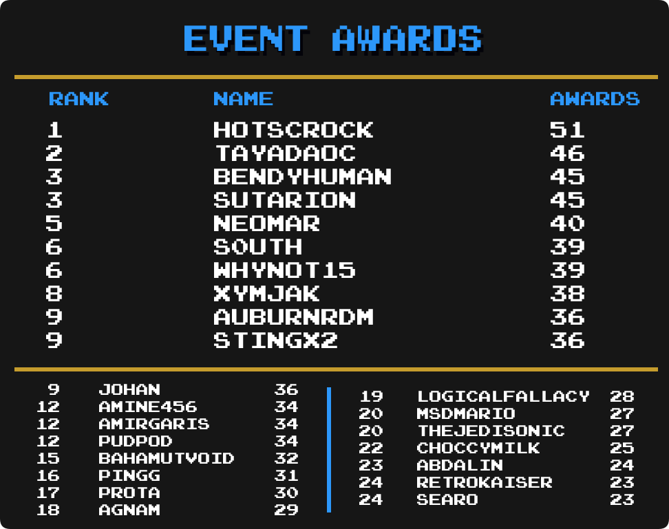
-
 Hotscrock remains in 1st with 51 total mastery awards.
Hotscrock remains in 1st with 51 total mastery awards. -
 Tayadaoc has moved up 2 spots and is in 2nd place.
Tayadaoc has moved up 2 spots and is in 2nd place. -
 NEOMAR has moved up 1 spot and is in 5th place.
NEOMAR has moved up 1 spot and is in 5th place. -
 s0uth has moved up 2 spots and is tied for 6th place.
s0uth has moved up 2 spots and is tied for 6th place. -
 Whynot15 has moved up 2 spots and is tied for 6th place.
Whynot15 has moved up 2 spots and is tied for 6th place. -
 StingX2 has moved up 2 spots and is in a 3-way tie for 9th place.
StingX2 has moved up 2 spots and is in a 3-way tie for 9th place. -
 Johan has moved up 5 spots and is in a 3-way tie for 9th place.
Johan has moved up 5 spots and is in a 3-way tie for 9th place. -
 amine456 has moved up 1 spot and is in a 3-way tie for 12th place.
amine456 has moved up 1 spot and is in a 3-way tie for 12th place. -
 LogicalFallacy has moved up 2 spots and is in 19th place.
LogicalFallacy has moved up 2 spots and is in 19th place.
Site Awards

-
 SnowPin remains in 1st with 43 total mastery awards.
SnowPin remains in 1st with 43 total mastery awards. -
 LadyNadia has moved up 1 spot and is tied for 4th place.
LadyNadia has moved up 1 spot and is tied for 4th place. -
 Hexadigital has moved up 1 spot and is tied for 13th place.
Hexadigital has moved up 1 spot and is tied for 13th place.
Hack Awards
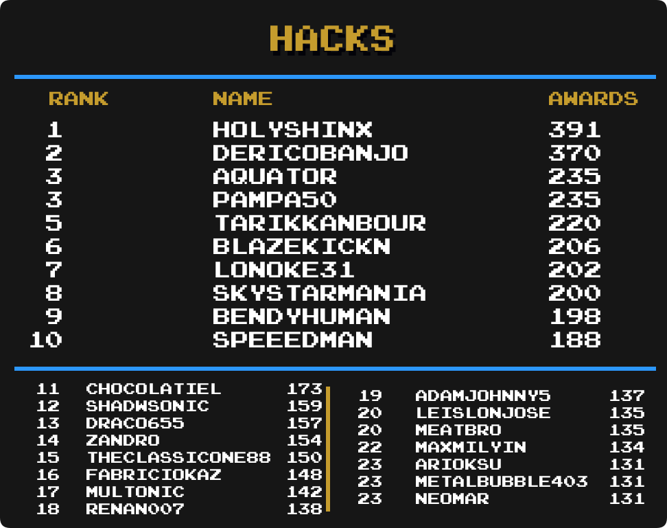
-
HolyShinx remains in 1st with 391 total mastery awards.
-
 Skystarmania has moved up 1 spot and is in 8th place.
Skystarmania has moved up 1 spot and is in 8th place. -
zandro has moved up 1 spot and is in 14th place.
-
 TheClassicOne88 has moved up 1 spot and is in 15th place.
TheClassicOne88 has moved up 1 spot and is in 15th place. -
 Meatbro has moved up 1 spot and is tied for 20th place.
Meatbro has moved up 1 spot and is tied for 20th place.
Homebrew Awards
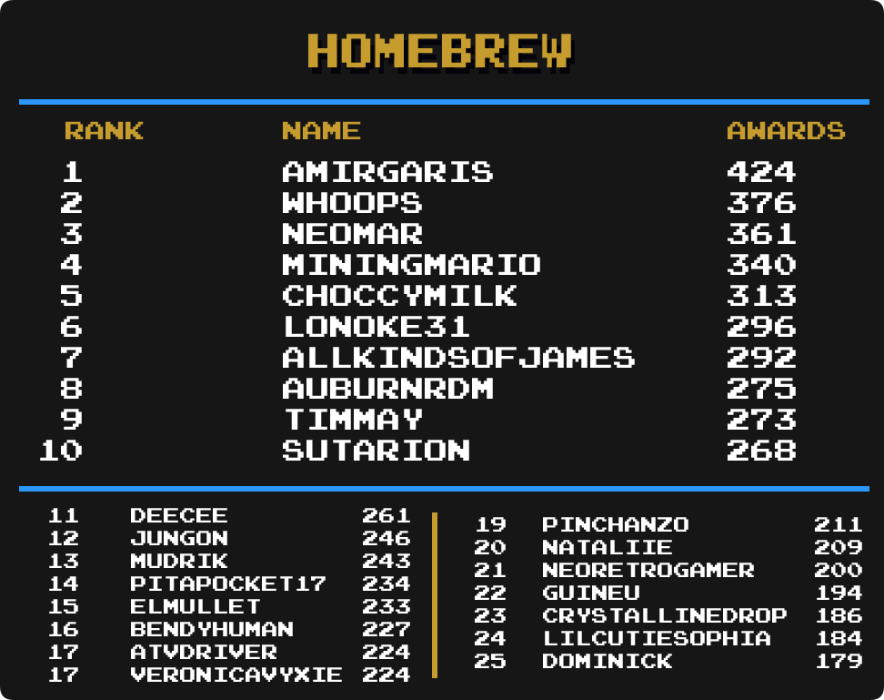
-
AmirGaris remains in 1st with 424 total mastery awards.
-
Sutarion has moved up 1 spot and is in 10th place.
-
Jungon has moved up 1 spot and is in 12th place.
-
pitapocket17 has moved up 1 spot and is in 14th place.
-
 ElMullet has moved up 3 spots and is in 15th place.
ElMullet has moved up 3 spots and is in 15th place. -
 NeoRetroGamer has moved up 1 spot and is in 21st place.
NeoRetroGamer has moved up 1 spot and is in 21st place.
Subset Awards

-
 GreninjaMan remains in 1st with 53 total mastery awards.
GreninjaMan remains in 1st with 53 total mastery awards. -
 Melodius has moved up 1 spot and is in 6th place.
Melodius has moved up 1 spot and is in 6th place. -
 NimbusSpark has moved up 3 spots and is tied for 11th place.
NimbusSpark has moved up 3 spots and is tied for 11th place. -
 Slime95 has moved up 10 spots and is tied for 11th place.
Slime95 has moved up 10 spots and is tied for 11th place. -
 MalevolentMinun has made it into the top 25 and is in a 3-way tie for 18th place.
MalevolentMinun has made it into the top 25 and is in a 3-way tie for 18th place. -
 Ap0calyptic1 has made it into the top 25 and is in a 4-way tie for 21st place.
Ap0calyptic1 has made it into the top 25 and is in a 4-way tie for 21st place.
Amstrad CPC
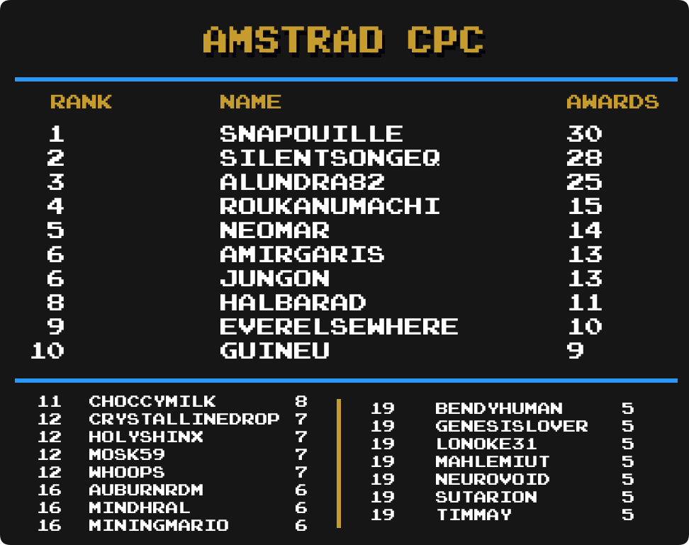
-
 Snapouille remains in 1st with 30 total mastery awards.
Snapouille remains in 1st with 30 total mastery awards. -
 Halbarad has moved up 2 spots and is in 8th place.
Halbarad has moved up 2 spots and is in 8th place. -
 Mindhral has made it into the top 25 and is in a 3-way tie for 16th place.
Mindhral has made it into the top 25 and is in a 3-way tie for 16th place.
Apple II
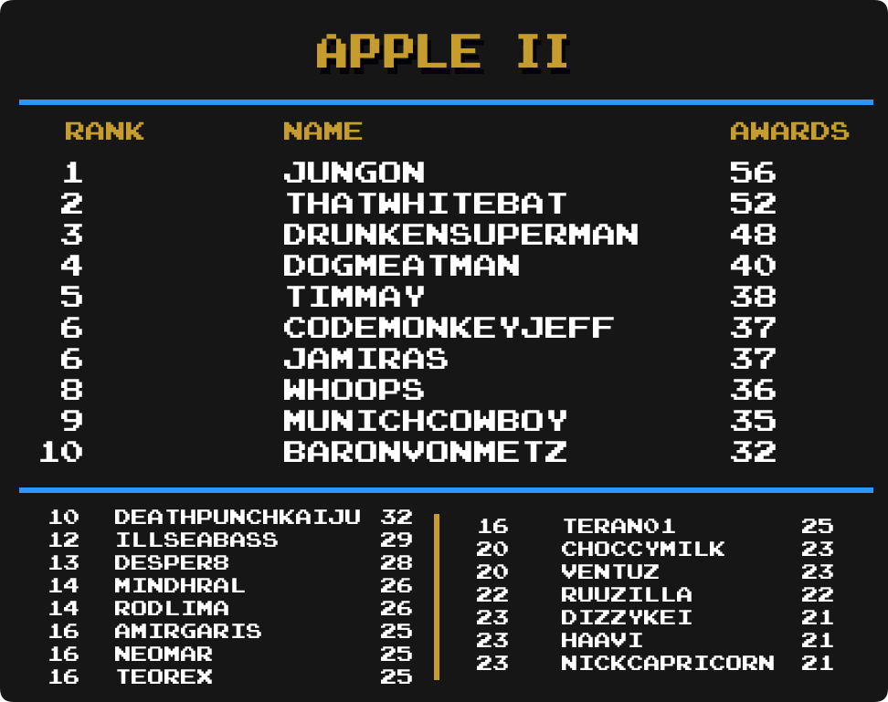
-
Jungon has taken 1st place with 56 total mastery awards.
-
Timmay has moved up 1 spot and is in 5th place.
-
 CodeMonkeyJeff has moved up 3 spots and is tied for 6th place.
CodeMonkeyJeff has moved up 3 spots and is tied for 6th place. -
 Munichcowboy has moved up 12 spots and is in 9th place.
Munichcowboy has moved up 12 spots and is in 9th place. -
 BaronVonMetz has moved up 1 spot and is tied for 10th place.
BaronVonMetz has moved up 1 spot and is tied for 10th place. -
DeathPunchKaiju has made it into the top 25 and is tied for 10th place.
-
RodLima has moved up 1 spot and is tied for 14th place.
-
dizzykei has made it into the top 25 and is in a 4-way tie for 23rd place.
-
 haavi has made it into the top 25 and is in a 4-way tie for 23rd place.
haavi has made it into the top 25 and is in a 4-way tie for 23rd place. -
 NickCapricorn has made it into the top 25 and is in a 4-way tie for 23rd place.
NickCapricorn has made it into the top 25 and is in a 4-way tie for 23rd place.
Arcade
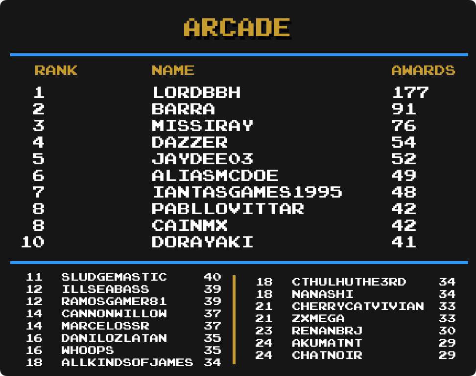
-
 LordBBH remains in 1st with 177 total mastery awards.
LordBBH remains in 1st with 177 total mastery awards. -
 Dazzer has moved up 2 spots and is in 4th place.
Dazzer has moved up 2 spots and is in 4th place. -
 ramosgamer81 has moved up 2 spots and is tied for 12th place.
ramosgamer81 has moved up 2 spots and is tied for 12th place. -
 DaniloZlatan has moved up 4 spots and is tied for 16th place.
DaniloZlatan has moved up 4 spots and is tied for 16th place. -
 zxmega has made it into the top 25 and is tied for 21st place.
zxmega has made it into the top 25 and is tied for 21st place. -
 renanbrj has made it into the top 25 and is in 23rd place.
renanbrj has made it into the top 25 and is in 23rd place. -
 AkumaTNT has made it into the top 25 and is in a 6-way tie for 24th place.
AkumaTNT has made it into the top 25 and is in a 6-way tie for 24th place.
Arcadia 2001
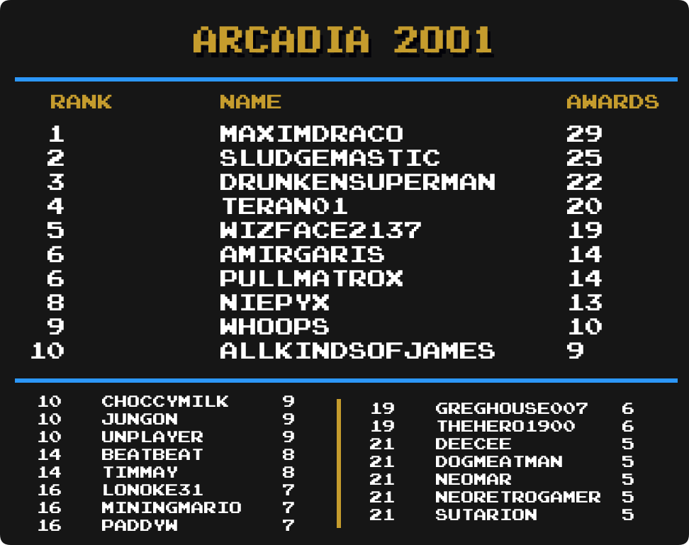
-
 Maximdraco remains in 1st with 29 total mastery awards.
Maximdraco remains in 1st with 29 total mastery awards. -
 thehero1900 has made it into the top 25 and is tied for 19th place.
thehero1900 has made it into the top 25 and is tied for 19th place.
Arduboy
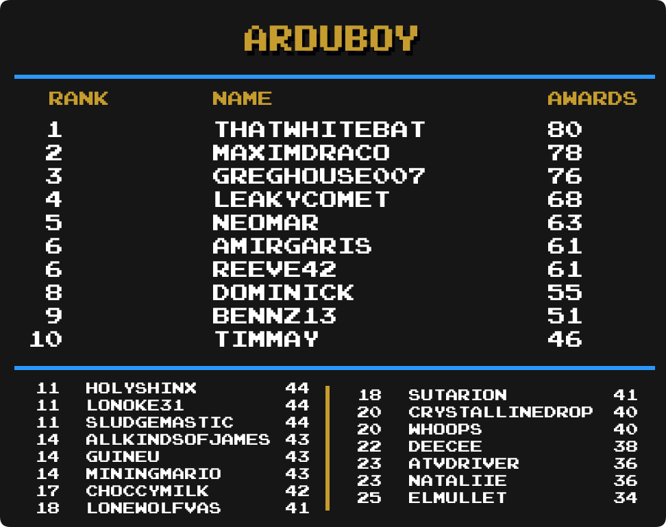
-
 ThatWhiteBat remains in 1st with 80 total mastery awards.
ThatWhiteBat remains in 1st with 80 total mastery awards. -
 Dominick has moved up 1 spot and is in 8th place.
Dominick has moved up 1 spot and is in 8th place. -
Sutarion has moved up 1 spot and is tied for 18th place.
-
DeeCee has moved up 1 spot and is in 22nd place.
Atari 2600
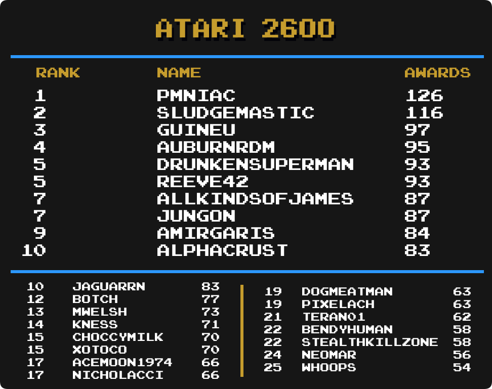
-
 PMniac remains in 1st with 126 total mastery awards.
PMniac remains in 1st with 126 total mastery awards. -
ChoccyMilk has moved up 1 spot and is tied for 15th place.
-
 AceMoon1974 has moved up 1 spot and is tied for 17th place.
AceMoon1974 has moved up 1 spot and is tied for 17th place.
Atari Jaguar CD
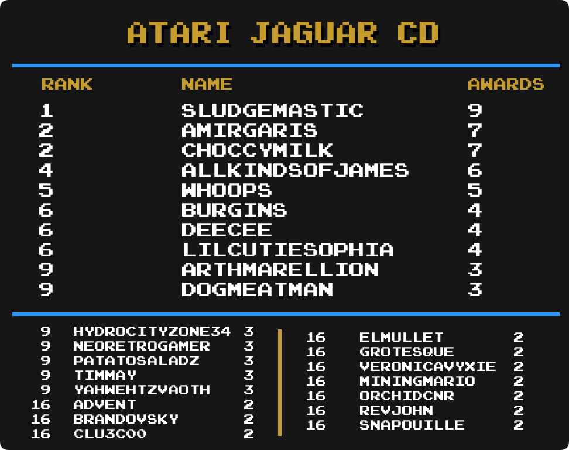
-
 sludgemastic remains in 1st with 9 total mastery awards.
sludgemastic remains in 1st with 9 total mastery awards.
Dreamcast
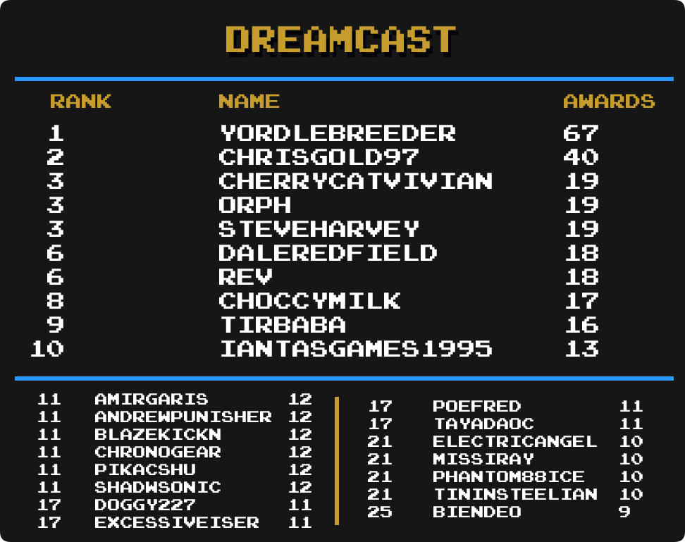
-
 Yordlebreeder remains in 1st with 67 total mastery awards.
Yordlebreeder remains in 1st with 67 total mastery awards. -
 Blazekickn has moved up 12 spots and is in a 6-way tie for 11th place.
Blazekickn has moved up 12 spots and is in a 6-way tie for 11th place. -
 ChronoGear has moved up 1 spot and is in a 6-way tie for 11th place.
ChronoGear has moved up 1 spot and is in a 6-way tie for 11th place.
Elektor TV Games Computer
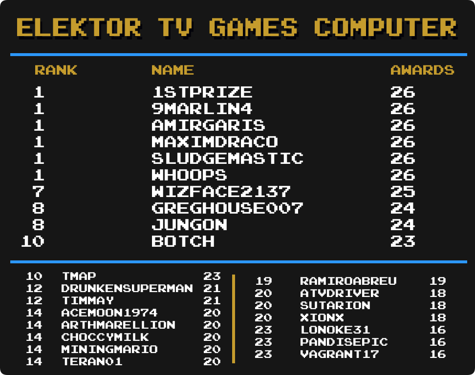
-
 1stPrize remains in 1st with 26 total mastery awards.
1stPrize remains in 1st with 26 total mastery awards. -
AceMoon1974 has moved up 10 spots and is in a 5-way tie for 14th place.
-
 pandisepic has made it into the top 25 and is in a 3-way tie for 23rd place.
pandisepic has made it into the top 25 and is in a 3-way tie for 23rd place.
Fairchild Channel F

-
 JeanBlasay has taken 1st place with 33 total mastery awards.
JeanBlasay has taken 1st place with 33 total mastery awards. -
 Teran01 has moved up 1 spot and is in a 5-way tie for 7th place.
Teran01 has moved up 1 spot and is in a 5-way tie for 7th place. -
DeathPunchKaiju has made it into the top 25 and is tied for 17th place.
-
 DataMcSponge has made it into the top 25 and is in a 3-way tie for 19th place.
DataMcSponge has made it into the top 25 and is in a 3-way tie for 19th place. -
 atvdriver has moved up 2 spots and is in a 5-way tie for 22nd place.
atvdriver has moved up 2 spots and is in a 5-way tie for 22nd place.
Game Boy
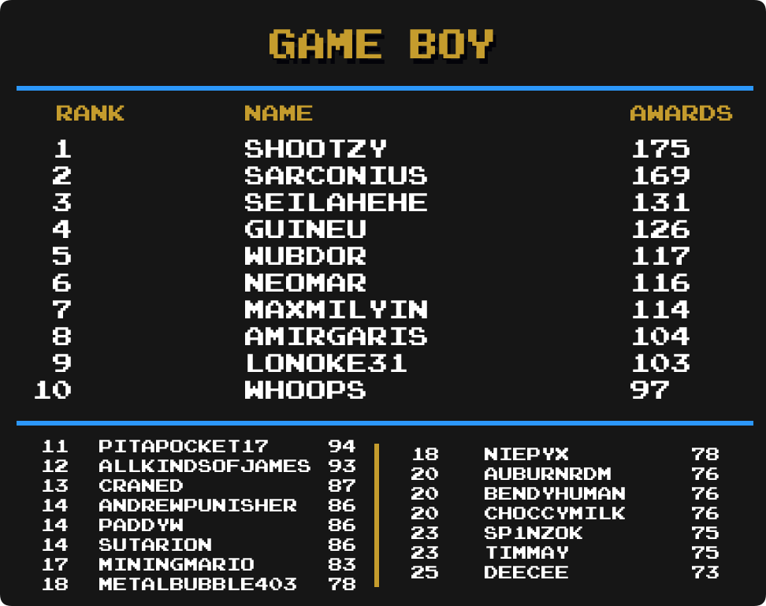
-
 Shootzy remains in 1st with 175 total mastery awards.
Shootzy remains in 1st with 175 total mastery awards. -
 seilahehe has moved up 1 spot and is in 3rd place.
seilahehe has moved up 1 spot and is in 3rd place. -
 Wubdor has moved up 2 spots and is in 5th place.
Wubdor has moved up 2 spots and is in 5th place. -
pitapocket17 has moved up 1 spot and is in 11th place.
-
 metalbubble403 has moved up 1 spot and is tied for 18th place.
metalbubble403 has moved up 1 spot and is tied for 18th place. -
ChoccyMilk has made it into the top 25 and is in a 3-way tie for 20th place.
-
 sp1nzoK has made it into the top 25 and is tied for 23rd place.
sp1nzoK has made it into the top 25 and is tied for 23rd place. -
Timmay has made it into the top 25 and is tied for 23rd place.
-
DeeCee has made it into the top 25 and is in a 4-way tie for 25th place.
Game Boy Advance
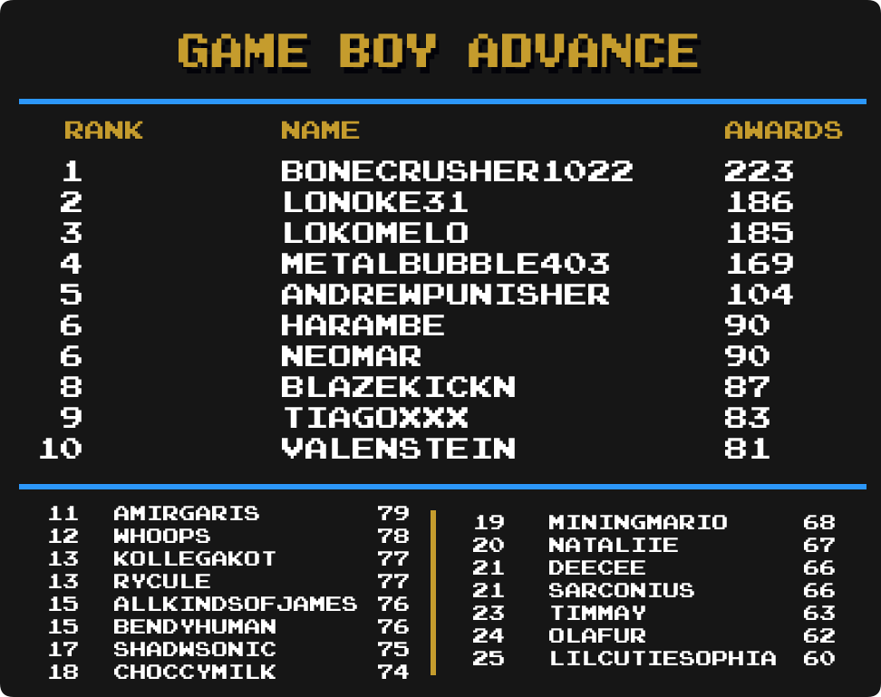
-
 bonecrusher1022 remains in 1st with 223 total mastery awards.
bonecrusher1022 remains in 1st with 223 total mastery awards. -
 BileDemon has moved up 2 spots and is tied for 6th place.
BileDemon has moved up 2 spots and is tied for 6th place. -
 Whoops has moved up 2 spots and is in 12th place.
Whoops has moved up 2 spots and is in 12th place. -
 KollegaKot has moved up 5 spots and is tied for 13th place.
KollegaKot has moved up 5 spots and is tied for 13th place. -
 RyCuLe has moved up 2 spots and is tied for 13th place.
RyCuLe has moved up 2 spots and is tied for 13th place. -
MiningMario has moved up 1 spot and is in 19th place.
-
DeeCee has moved up 3 spots and is tied for 21st place.
Game Boy Color
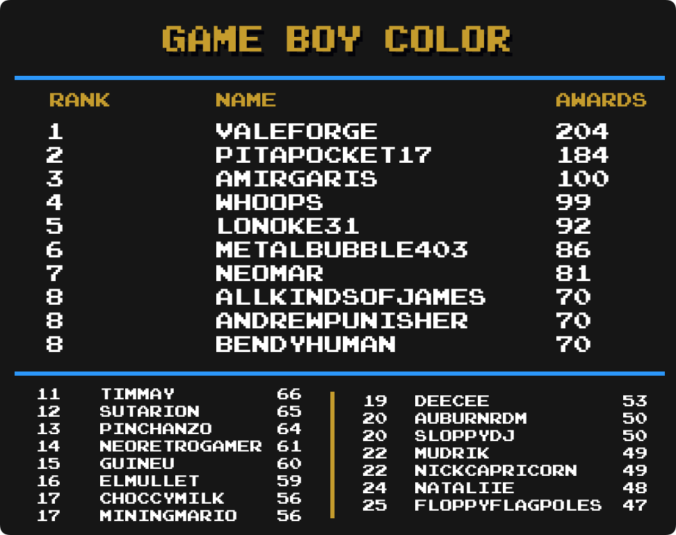
-
 valeforge remains in 1st with 204 total mastery awards.
valeforge remains in 1st with 204 total mastery awards. -
 AllKindsOfJames has moved up 2 spots and is in a 3-way tie for 8th place.
AllKindsOfJames has moved up 2 spots and is in a 3-way tie for 8th place. -
Timmay has moved up 1 spot and is in 11th place.
-
Sutarion has moved up 2 spots and is in 12th place.
-
NeoRetroGamer has moved up 2 spots and is in 14th place.
-
ElMullet has moved up 9 spots and is in 16th place.
-
Nataliie has made it into the top 25 and is in 24th place.
-
 FloppyFlagpoles has made it into the top 25 and is tied for 25th place.
FloppyFlagpoles has made it into the top 25 and is tied for 25th place.
Game Gear

-
Nydaxn remains in 1st with 106 total mastery awards.
-
 Nevanos has made it into the top 25 and is in a 5-way tie for 17th place.
Nevanos has made it into the top 25 and is in a 5-way tie for 17th place.
GameCube

-
 CassetteCobra remains in 1st with 31 total mastery awards.
CassetteCobra remains in 1st with 31 total mastery awards. -
XenonNV has moved up 2 spots and is tied for 1st place.
-
Kaiserlucas has moved up 3 spots and is in a 3-way tie for 6th place.
-
 Griffin has moved up 3 spots and is in a 3-way tie for 11th place.
Griffin has moved up 3 spots and is in a 3-way tie for 11th place. -
 Pielord90 has made it into the top 25 and is tied for 16th place.
Pielord90 has made it into the top 25 and is tied for 16th place. -
 FemTyler has moved up 5 spots and is tied for 18th place.
FemTyler has moved up 5 spots and is tied for 18th place. -
Slime95 has moved up 2 spots and is tied for 18th place.
-
 Doolz has moved up 4 spots and is in a 8-way tie for 20th place.
Doolz has moved up 4 spots and is in a 8-way tie for 20th place. -
 Kyzirado has made it into the top 25 and is in a 8-way tie for 20th place.
Kyzirado has made it into the top 25 and is in a 8-way tie for 20th place. -
 Lonoke31 has made it into the top 25 and is in a 8-way tie for 20th place.
Lonoke31 has made it into the top 25 and is in a 8-way tie for 20th place.
Interton VC 4000
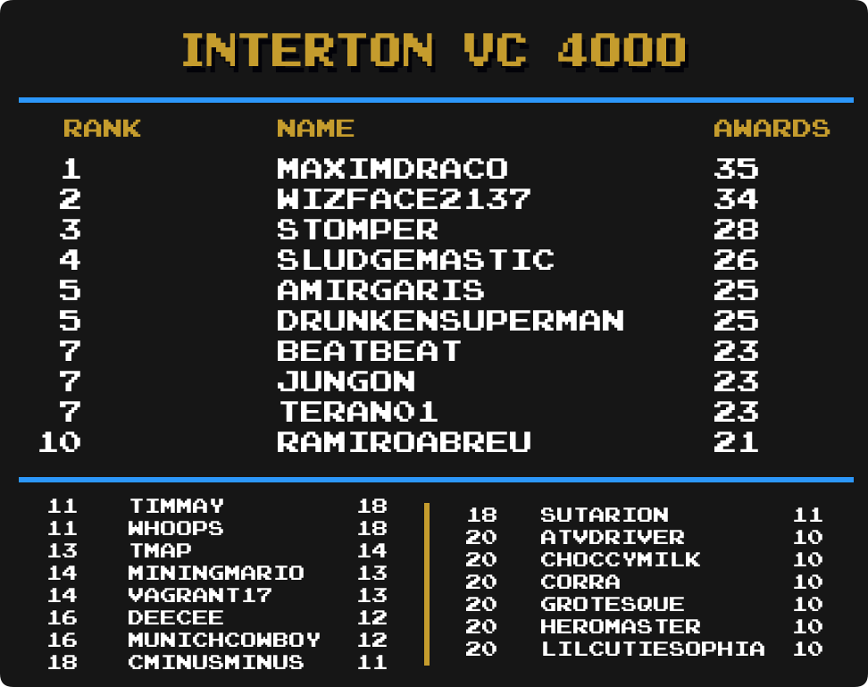
-
Maximdraco remains in 1st with 35 total mastery awards.
-
 Stomper has moved up 3 spots and is in 3rd place.
Stomper has moved up 3 spots and is in 3rd place. -
DeeCee has moved up 1 spot and is tied for 16th place.
-
 CMinusMinus has made it into the top 25 and is tied for 18th place.
CMinusMinus has made it into the top 25 and is tied for 18th place. -
atvdriver has moved up 4 spots and is in a 6-way tie for 20th place.
-
ChoccyMilk has moved up 4 spots and is in a 6-way tie for 20th place..
Master System
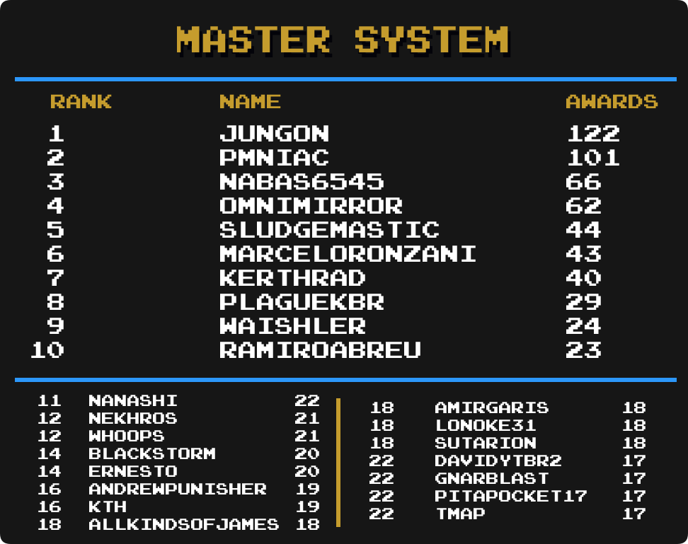
-
Jungon remains in 1st with 122 total mastery awards.
-
 Nabas has moved up 1 spot and is in 3rd place.
Nabas has moved up 1 spot and is in 3rd place. -
 MarceloRonzani has moved up 2 spots and is in 6th place.
MarceloRonzani has moved up 2 spots and is in 6th place. -
Lonoke31 has made it into the top 25 and is in a 4-way tie for 18th place.
Mega Drive

-
Jungon remains in 1st with 128 total mastery awards.
-
 tmap has moved up 1 spot and is in 5th place.
tmap has moved up 1 spot and is in 5th place. -
Nevanos has moved up 1 spot and is in 7th place.
-
 rafaellgcorreia has moved up 3 spots and is in 15th place.
rafaellgcorreia has moved up 3 spots and is in 15th place.
Mega Duck
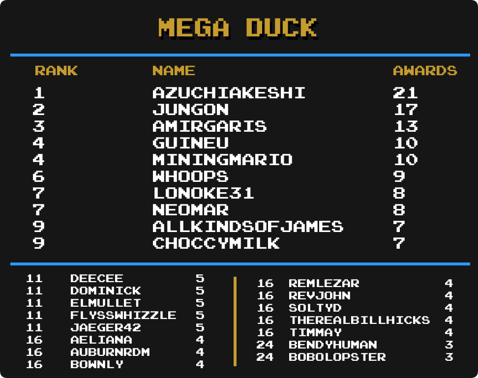
-
 AzuchiAkeshi remains in 1st with 21 total mastery awards.
AzuchiAkeshi remains in 1st with 21 total mastery awards. -
 Aeliana has moved up 7 spots and is in a 8-way tie for 16th place.
Aeliana has moved up 7 spots and is in a 8-way tie for 16th place.
Nintendo 64

-
 AstroFennec remains in 1st with 94 total mastery awards.
AstroFennec remains in 1st with 94 total mastery awards. -
Melodius has moved up 1 spot and is in 10th place.
-
 TBRM1 has made it into the top 25 and is in 11th place.
TBRM1 has made it into the top 25 and is in 11th place. -
Lonoke31 has moved up 1 spot and is in a 3-way tie for 15th place.
-
 Tirbaba has moved up 1 spot and is in a 3-way tie for 19th place.
Tirbaba has moved up 1 spot and is in a 3-way tie for 19th place. -
Blazekickn has moved up 1 spot and is tied for 24th place.
NES

-
 mx01 remains in 1st with 326 total mastery awards.
mx01 remains in 1st with 326 total mastery awards. -
 gnarblast has moved up 5 spots and is in 7th place.
gnarblast has moved up 5 spots and is in 7th place. -
Reeve42 has moved up 6 spots and is in 17th place.
-
 sheff666 has moved up 1 spot and is in 24th place.
sheff666 has moved up 1 spot and is in 24th place.
Nintendo DS

-
 Olafur remains in 1st with 189 total mastery awards.
Olafur remains in 1st with 189 total mastery awards. -
Whoops has moved up 1 spot and is in 4th place.
-
MiningMario has moved up 1 spot and is in 5th place.
-
NEOMAR has moved up 1 spot and is tied for 6th place.
-
AmirGaris has moved up 5 spots and is in 8th place.
-
Lonoke31 has moved up 2 spots and is in 12th place.
-
 mudrik has moved up 1 spot and is in 23rd place.
mudrik has moved up 1 spot and is in 23rd place.
Nintendo DSi
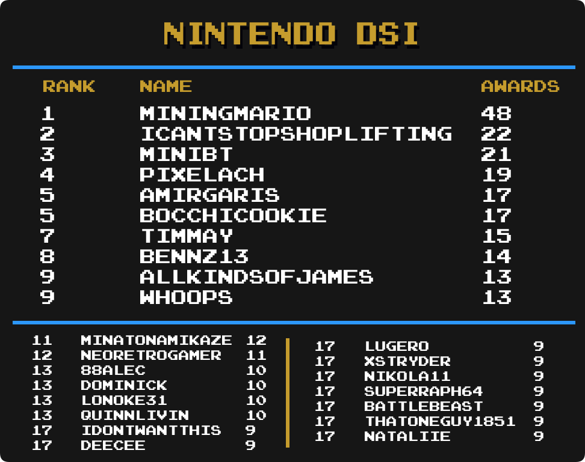
-
MiningMario remains in 1st with 48 total mastery awards.
-
 Sartoonel has moved up 1 spot and is in 2nd place.
Sartoonel has moved up 1 spot and is in 2nd place.
PC Engine
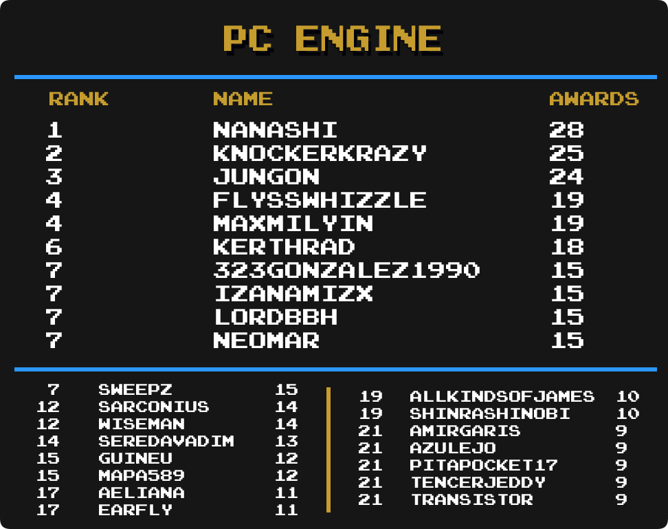
-
 Nanashi remains in 1st with 28 total mastery awards.
Nanashi remains in 1st with 28 total mastery awards. -
 Kerthrad has moved up 5 spots and is in 6th place.
Kerthrad has moved up 5 spots and is in 6th place.
PC Engine CD

-
Nanashi remains in 1st with 22 total mastery awards.
-
Whoops has moved up 4 spots and is in a 3-way tie for 8th place.
-
 Orclease has made it into the top 25 and is in a 9-way tie for 16th place..
Orclease has made it into the top 25 and is in a 9-way tie for 16th place..
PC-8000/8800

-
Jungon remains in 1st with 32 total mastery awards.
PlayStation
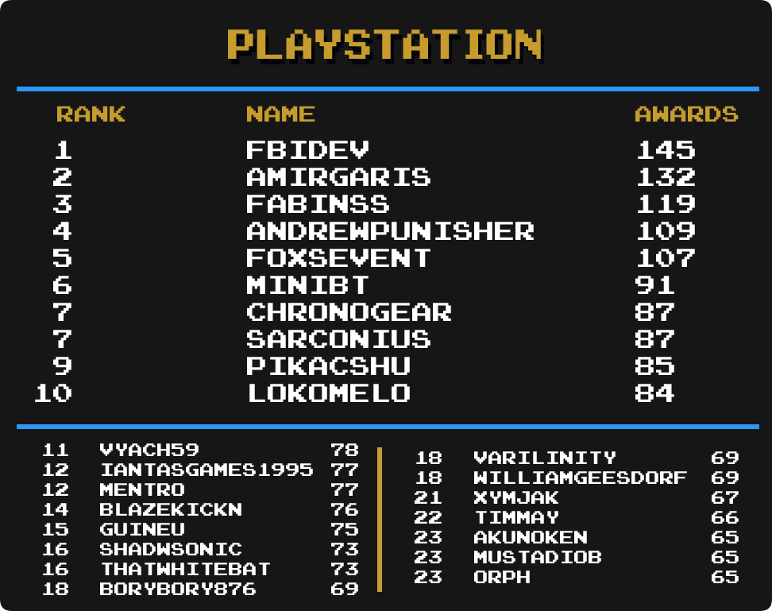
-
 FBiDev remains in 1st with 145 total mastery awards.
FBiDev remains in 1st with 145 total mastery awards. -
 Pikacshu has moved up 1 spot and is in 9th place.
Pikacshu has moved up 1 spot and is in 9th place. -
 Vyach59 has moved up 1 spot and is in 11th place.
Vyach59 has moved up 1 spot and is in 11th place. -
 ShadwSonic has moved up 1 spot and is tied for 16th place.
ShadwSonic has moved up 1 spot and is tied for 16th place. -
 Varil has moved up 1 spot and is in a 3-way tie for 18th place.
Varil has moved up 1 spot and is in a 3-way tie for 18th place. -
Timmay has moved up 3 spots and is in 22nd place.
-
 AkunoKen has made it into the top 25 and is in a 4-way tie for 23rd place..
AkunoKen has made it into the top 25 and is in a 4-way tie for 23rd place..
PlayStation 2
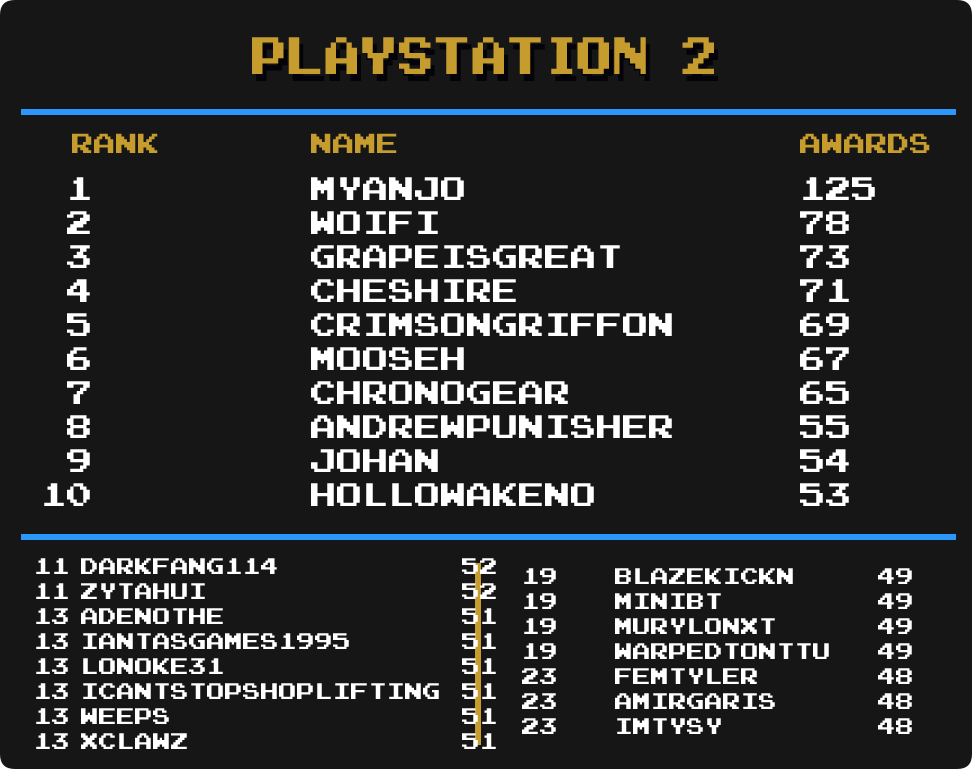
-
 Myanjo remains in 1st with 125 total mastery awards.
Myanjo remains in 1st with 125 total mastery awards. -
 CrimsonGriffon has moved up 2 spots and is in 5th place.
CrimsonGriffon has moved up 2 spots and is in 5th place. -
 Darkfang114 has moved up 10 spots and is tied for 11th place.
Darkfang114 has moved up 10 spots and is tied for 11th place. -
 IantasGames1995 has moved up 8 spots and is in a 6-way tie for 13th place.
IantasGames1995 has moved up 8 spots and is in a 6-way tie for 13th place. -
 weeps has moved up 8 spots and is in a 6-way tie for 13th place.
weeps has moved up 8 spots and is in a 6-way tie for 13th place. -
Blazekickn has moved up 1 spot and is in a 4-way tie for 19th place.
-
 murylonxt has made it into the top 25 and is in a 4-way tie for 19th place.
murylonxt has made it into the top 25 and is in a 4-way tie for 19th place.
PlayStation Portable
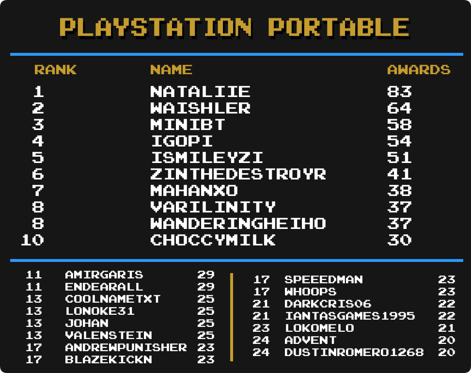
-
Nataliie remains in 1st with 83 total mastery awards.
-
 CoolNameTXT has moved up 4 spots and is in a 4-way tie for 13th place.
CoolNameTXT has moved up 4 spots and is in a 4-way tie for 13th place. -
Johan has moved up 4 spots and is in a 4-way tie for 13th place.
-
Whoops has moved up 1 spot and is in a 4-way tie for 17th place.
Pokémon Mini

-
ThatWhiteBat remains in 1st with 38 total mastery awards.
-
Sutarion has moved up 3 spots and is tied for 16th place.
Sega Saturn
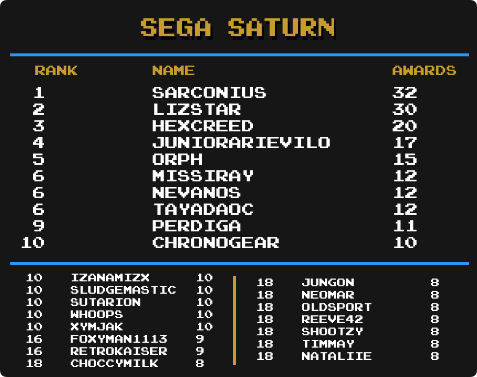
-
Sarconius remains in 1st with 32 total mastery awards.
-
 missiray has moved up 1 spot and is in a 3-way tie for 6th place.
missiray has moved up 1 spot and is in a 3-way tie for 6th place. -
Nevanos has moved up 1 spot and is in a 3-way tie for 6th place.
-
Whoops has moved up 11 spot and is in a 6-way tie for 10th place.
Sega CD
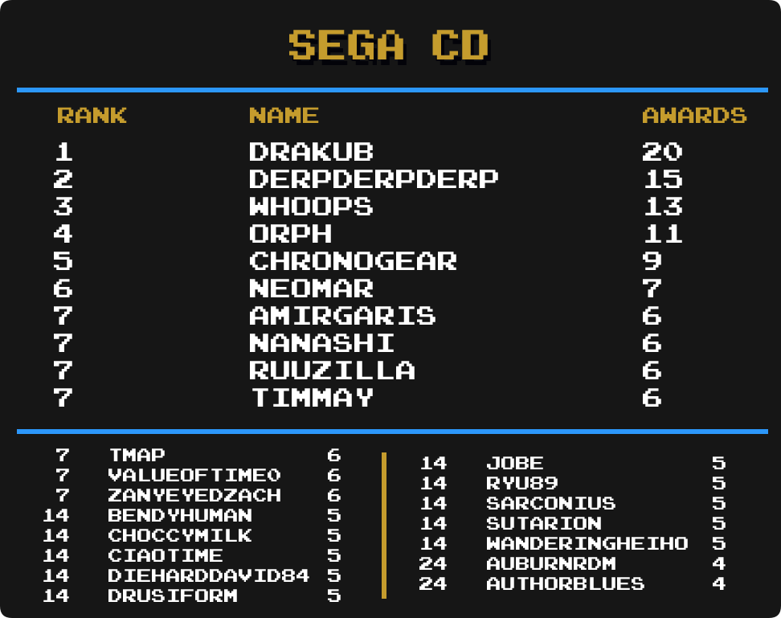
-
 Drakub remains in 1st with 20 total mastery awards.
Drakub remains in 1st with 20 total mastery awards. -
Whoops has moved up 1 spot and is in 3rd place.
-
NEOMAR has moved up 2 spots and is in 6th place.
-
Timmay has moved up 10 spots and is in a 7-way tie for 7th place.
-
 Jobe has made it into the top 25 and is in a 10-way tie for 14th place.
Jobe has made it into the top 25 and is in a 10-way tie for 14th place. -
 ryu89 has made it into the top 25 and is in a 10-way tie for 14th place.
ryu89 has made it into the top 25 and is in a 10-way tie for 14th place. -
 authorblues has made it into the top 25 and is in a 21-way tie for 24th place.
authorblues has made it into the top 25 and is in a 21-way tie for 24th place.
SG-1000

-
Jungon remains in 1st with 64 total mastery awards.
SNES

-
 danibodom remains in 1st with 297 total mastery awards.
danibodom remains in 1st with 297 total mastery awards. -
 KnockerKrazy has moved up 1 spot and is in 19th place.
KnockerKrazy has moved up 1 spot and is in 19th place. -
 Tiagofsp has made it into the top 25 and is in a 3-way tie for 23rd place.
Tiagofsp has made it into the top 25 and is in a 3-way tie for 23rd place.
Uzebox
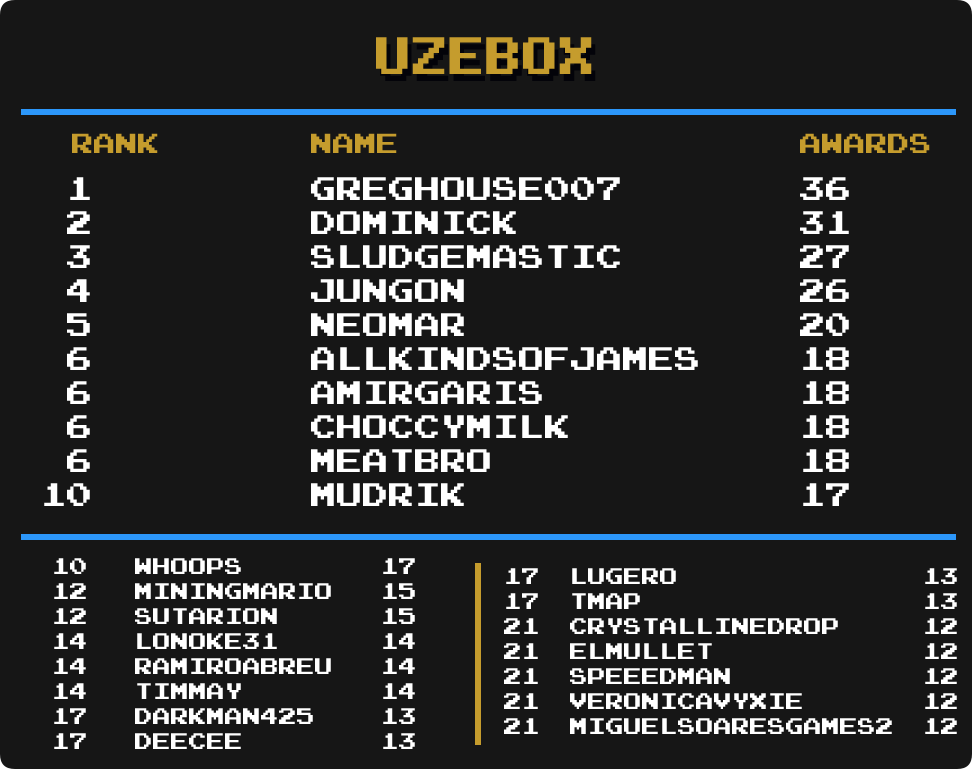
-
 GregHouse007 remains in 1st with 36 total mastery awards.
GregHouse007 remains in 1st with 36 total mastery awards. -
 Lugero has moved up 4 spots and is in a 4-way tie for 17th place.
Lugero has moved up 4 spots and is in a 4-way tie for 17th place.
Virtual Boy
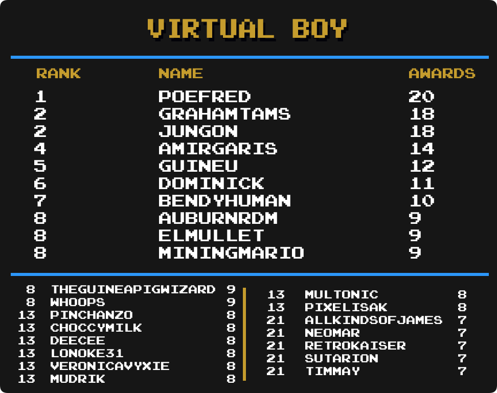
-
 Poefred remains in 1st with 20 total mastery awards.
Poefred remains in 1st with 20 total mastery awards. -
MiningMario has moved up 7 spots and is in a 5-way tie for 8th place.
WASM-4
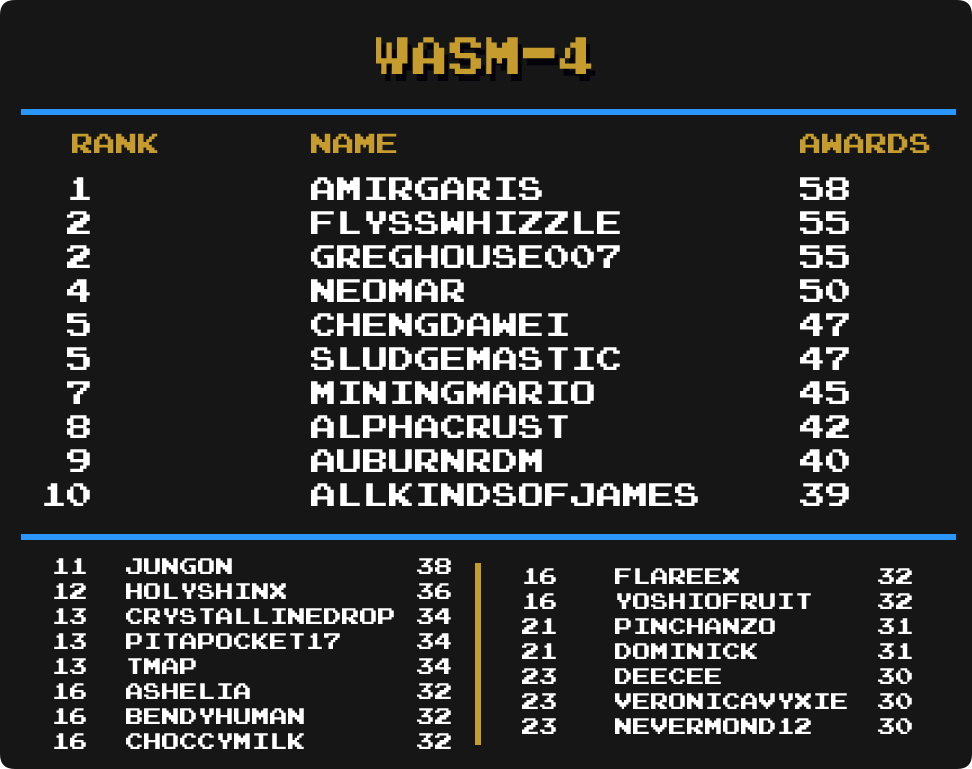
-
AmirGaris remains in 1st with 58 total mastery awards.
-
DeeCee has made it into the top 25 and is in a 6-way tie for 23rd place.
Watara Supervision

-
AzuchiAkeshi remains in 1st with 58 total mastery awards.
-
ChoccyMilk has moved up 2 spots and is in a 3-way tie for 17th place.
-
 FlyssWhizzle has moved up 2 spots and is in a 3-way tie for 20th place.
FlyssWhizzle has moved up 2 spots and is in a 3-way tie for 20th place.